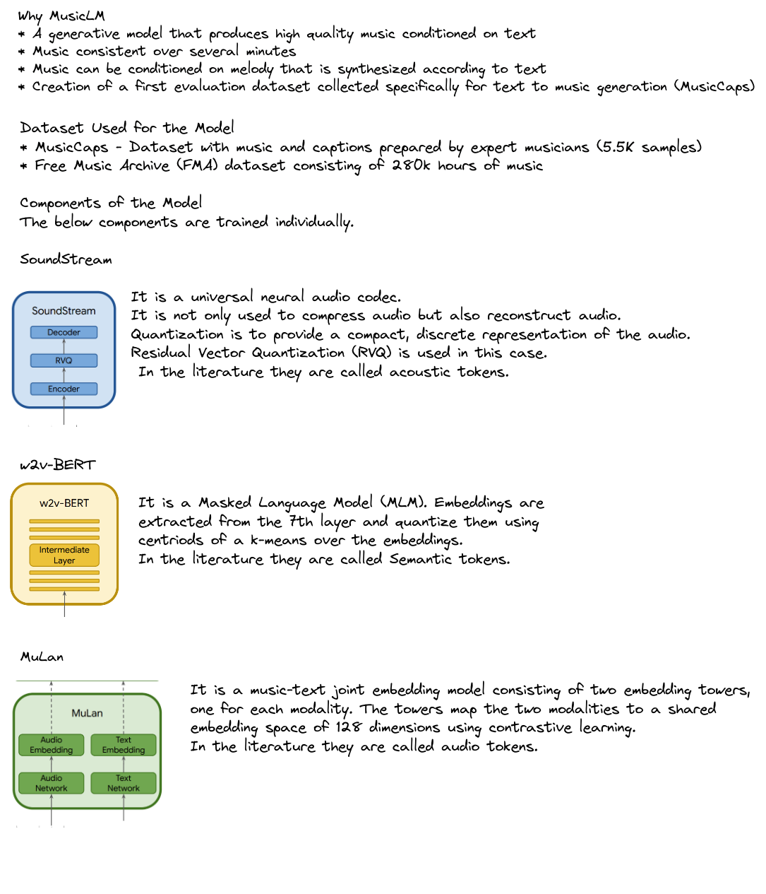
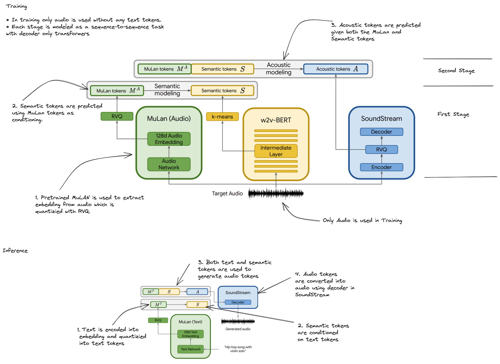
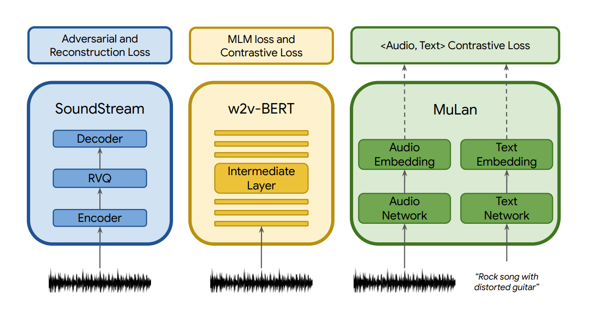
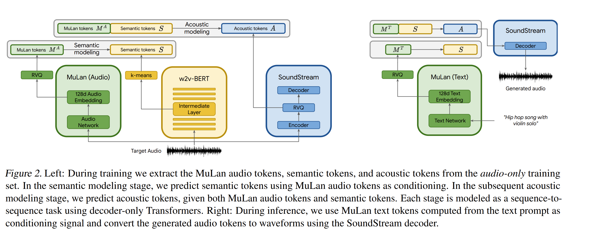

MusicLM: Generating Music from Text
  
Why MusicLM
- Generating high-fidelity music from text descriptions
- Conditional music generation as a hierarchical sequence-to-sequence modeling task and it generates music at 24kHZ that remains consistent over several minutes.
- It can be conditioned on both text and a melody - It can transform whistled and hummed melodies according to the style described in a text caption.
Challenges
- Scarcity of paired audio-text data. Text descriptions of general audio is harder. Not possible to capture with a few words the characteristics of acoustic scenes.
- Audio is structured along a temporal dimension which makes sequence-wide captions a much weaker level of annotation than an image caption
Previous work
- Quantization
- Generative models for audio
- Conditioned audio generation
- Text conditioned Image generation
- Joint embedding models for music and text (MuLan)
Quantization - The goal is to provide a compact, discrete representation, which at the same time allows for high-fidelity reconstruction. (VQ-VAE)
SoundStream is a universal neural audio codec - compress audio and reconstruct - tokenizer. SoundStream uses residual vector quantization (RVQ)
Datasets
- MusicCaps - High quality music caption dataset with 5.5K examples prepared by expert musicians.
Components of MusicLM

MuLan
- Joint music-text model that is trained to project music and its corresponding text description to representations close to each other in an embedding space. This shared embedding space eliminates the need for captions at training time altogether, and allows training on massive audio-only corpora.
- It is a music-text joint embedding model consisting of two embedding towers, one for each modality. The towers map the two modalities to a shared embedding space of 128 dimensions using contrastive learning.
SoundStream
audio –> embeddings –> quantization (RVQ) –> acoustic tokens. Each second of audio is represented by 600 tokens, referred as audio tokens.
w2v-BERT
An intermediate layer of MLM module of a w2v-BERT model with 600M parameters are used. Embeddings are extracted from the 7th layer and quantize them using the centroids of a learned k-means over the embeddings. We use 1024 clusters and a sampling rate of 25 Hz, resulting in 25 semantic tokens for every second of audio.
Method
SoundStream, w2v-BERT, MuLan are pretrained independently and frozen, such that they provide the discrete audio and text representations for the sequence-to-sequence modeling.

Hierarchical Modeling of Audio representations
To achieve text-conditioned music generation, hierarchical modeling is proposed. Each stage is modeled autogressively by a separate decoder-only transformer.
Training
- Pretrained MuLan
- SoundStream and w2v-BERT trained on Free Music Archive (FMA) dataset. They are trained on a dataset amounting to 280K hours of music
Evaluation
MusicCaps dataset was prepared. It consists of 5.5K music clips each paired with corresponding text descriptions in English, written by ten professional musicians. For each 10-second music clip, MusicCaps provides: (1) a free-text caption consisting of four sentences on average, describing the music and (2) a list of music aspects, describing genre, mood, tempo, singer voices, instrumentation, dissonances, rhythm, etc. On average, the dataset includes eleven aspects per clip
Metrics
- Audio quality
- Adherence to text description
- Frechet Audio Distance (FAD) is a reference-free audio quality metric, low scores are preferred
- KL Divergence (KLD)
- There is many to many relationship between text descriptions and music clips compatible with them. To overcome this a proxy was adopted. A classifier trained on multi-label classification on AudioSet is used to compute class predictions for both the generated and the reference music and measure the KL divergence between probability distributions of class predictions. KLD is expected to be low.
- MuLan Cycle Consistency (MCC) - High preferred.
- As a joint musictext embedding model, MuLan can be used to quantify the similarity between music-text pairs. We compute the MuLan embeddings from the text descriptions in MusicCaps as well as the generated music based on them, and define the MCC metric as the average cosine similarity between these embeddings.
- Qualitative evaluation
- Training data memorization
- To study the extent to which MusicLM might memorize music segments.
Results
- MusicLM compared with Mubert and Riffusion. MusicLM perform better than Mubert and Riffusion.
when the transformer models are directly trained on acoustic tokens from MuLAN tokens, there is a drop n KLD and MCC. Semantic modeling facilitate the adherence to the text description.
Risks with music generation
- Potential misappropriation of creative content - conducted a thorough study of memorization - when feeding MuLan embeddings to MusicLM, the sequences of generated tokens significantly differ from the corresponding sequences in the training set.